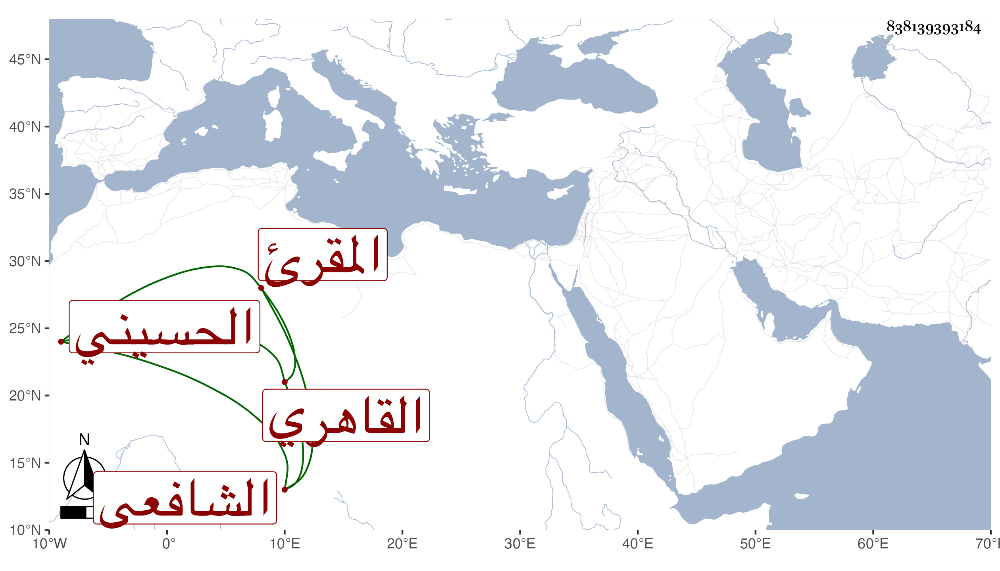

0902Sakhawi.DawLamic.ITO20230111-ara1.EIS1600.838139393184
Biography ID: 838139393184
642
أحمد بن موسى بن أحمد بن عبد الرحمن الشهاب أبو الفتح القاهري الحسيني سكنا الشافعي المقرئ ويعرف بالمتبولي نسبة لشيخه البرهان الشهير . ولد ونشأ فحفظ القرآن واشتغل على السيد النسابة والعلم البلقيني والمناوي والعبادي وإبراهيم الشرواني في الفقه ، وأخذ عن الأخير والبوتيجي وأبي الجود الفرائض والحساب وكذا أخذ في الحساب عن التقي الحصني بل لازمه في الفقه والتفسير والأصلين والمعاني والبيان والعربية وغيرها من العقلي والنقلي ، وأخذ عن الكافياجي والعز عبد السلام البغدادي أشياء ، وتردد لابن الديري في التفسير والحديث وغيرهما وأخذ القراءات عن النور إمام الأزهر والشمس بن عمران وعبد الغني الهيثمي وجمع على ابن أسد للسبع ، وسمع الحديث على غير واحد كالسيد النسابة وابن الملقن والقمصي وابن المصري والحجازي والنشاوي وهو ممن سمع البخاري بكماله في الكاملية ، وأجاز له غير واحد كالبرهان الباعوني والنظام بن مفلح والشهاب بن زيد ، وأذن له البلقيني والكافياجي والعبادي الحصني في الإفتاء والتدريس وابن أسد في الإقراء بل قرص له البلقيني والكافياجي والعبادي والحصني بعض تصانيفه وكذا كتب له العز الحنبلي على بعضها ووقفت على عدة منها والتمس مني تقريظا فما تيسر ، وصحب المتبولي فعرف به ، وخطب وقرأ على العامة وتصدر لقراءة الجوق وتكسب بذلك وكذا بالشهادة ، وحج وتنزل في سعيد السعداء وغيرها ، ومما صنفه الرد على البقاعي في انكار قول يا دائم المعروف وعمل المدد الفائض في الذب عن ابن الفارض وامتدح شيخه الحصني بقصيدة وكذا قال :
| من ادعى العلم ولم يوصف به | فذاك قد عرض للنقص |
| فالعلم معروف لأربابه | يظهر بالنطق وبالفحص |
واستنابه الزين زكريا في القضاء وباشر ذلك غير متحول عن طريقته وجمع حينئذ في آداب القضاء تصانيف وكثر تردده إلي وإقباله علي وغالب ما أثبته مما أعلمني به .
